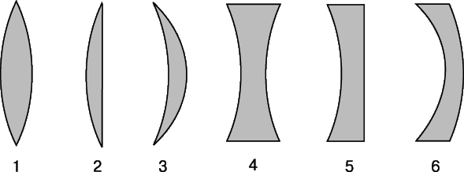

Линзой называется прозрачное тело, ограниченное двумя криволинейными (чаще всего сферическими) или криволинейной и плоской поверхностями.
Линза может быть ограничена двумя выпуклыми сферическими поверхностями , выпуклой сферической поверхностью и плоскостью, выпуклой и вогнутой сферическими поверхностями. Эти линзы посередине толще, чем у краев, и все они называются выпуклыми:

Линзы, которые посередине тоньше, чем у краев, называются вогнутыми.
Тонкая линза.
Мы будем рассматривать наиболее простой случай, когда толщина линзы l=|AB| пренебрежимо мала по сравнению с радиусами R1 и R2 поверхностей линзы и расстоянием предмета от линзы.
Собирающая линза.
Точка, в которой пересекаются после преломлений в собирающей линзе лучи, падающие на линзу параллельно главной оптической оси, называется главным фокусом линзы. Эту точку обозначают буквой F.
Пустим три параллельных луча под углом к главной оптической оси. Мы увидим тогда, что пересечение произойдет не в главном фокусе линзы, а в другой точке. Точки пересечения лучей, падающих на линзу параллельными пучками, и при различных углах, образуемых этими пучками с главной оптической осью, располагаются в плоскости, перпендикулярной главной оптической оси и проходящей через главный фокус.